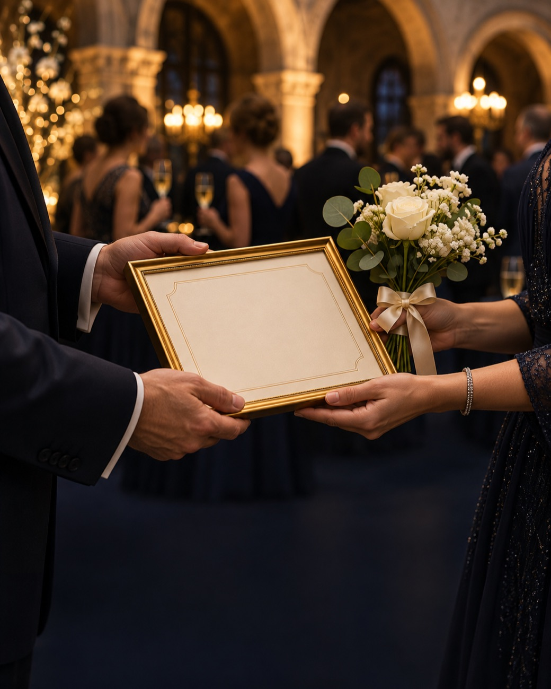
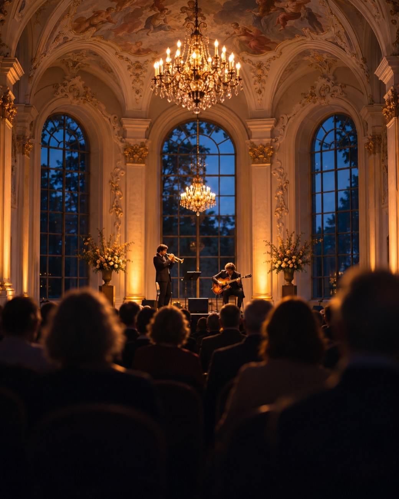

Ein Kreis, der sich kennt. Und der etwas bewegt.
Unser Club wurde am 27. Juni 1987 gegründet. Die Mitglieder kommen aus den unterschiedlichsten Berufen – was uns verbindet, ist die Überzeugung, dass man seiner Stadt etwas zurückgibt.
Einmal im Monat treffen wir uns zum Jour fixe im Weinhaus „Die Fledermaus“ in Sinthern. Wir beraten über Spendenanträge, hören Fachvorträge und pflegen, was einen Club ausmacht: das Gespräch unter Freunden.
Jedes Jahr übernimmt eine neue Präsidentin oder ein neuer Präsident die Verantwortung. So bleibt der Club in Bewegung – seit bald vier Jahrzehnten.
- gegründet
- 1987
- Mitglieder
- 33
- für Pulheim seit 2001 allein aus dem Adventskalender
- 420.000 €
Unser Leitbild
Wir setzen uns uneigennützig für die Entwicklung unseres Gemeinwesens ein.
Schwerpunkte sind Soziales, Bildung und Kultur in unserer Stadt.
Wir bewegen einsatzfreudige Menschen, einen Beitrag zur Erreichung unserer Ziele zu leisten.
Unsere Gemeinschaft ist getragen von Freundschaft, Toleranz und gegenseitigem Respekt.
Jeder Euro kommt an.
Was wir mit Konzerten und dem Adventskalender einnehmen, geben wir in voller Höhe weiter – ohne Abzug von Verwaltungskosten. Die trägt der Club selbst.
-
laufend
Lions Teller
Ein warmes Mittagessen im Schulalltag für Kinder in Pulheim.
-
3.000 €
OPEN DOORS Education Centre
Ein Food Truck für ein Bildungsprojekt.
-
3.000 €
Interplast
Langjährige Unterstützung der humanitären, plastisch-chirurgischen Hilfe.
-
jährlich
Schulprojekte
Förderung von Kindern, Jugendlichen und benachteiligten Familien.
Auswahl aus 2026. Die vollständige Förderübersicht ergänzt der Vorstand.
Das Clubjahr
Ein Club lebt von seinen Ritualen. Unsere kehren jedes Jahr wieder – und werden doch jedes Mal anders.
- Januar
Neujahrsempfang
Der Auftakt des Jahres und der Abend, an dem wir den Abt-Wolfhelm-Preis verleihen.
- Aschermittwoch
Fischessen
Eine der ältesten Traditionen des Clubs – 2027 am 10. Februar.
- Sommer
Sommerfest
Mit Partnerinnen, Partnern und Familien. Der Club in seiner entspanntesten Form.
- Juli
Lions-Reise und Staffelübergabe
Mehrere Tage gemeinsam unterwegs. Hier übergibt der Präsident das Amt an seinen Nachfolger.
- Oktober
Benefizkonzert im Kaisersaal
Ein Abend in der Abtei Brauweiler. 2026 mit 200 Gästen und „Chille en Kölle“.
- Advent
Adventskalender
Seit 2001 feste Pulheimer Tradition – und unsere wichtigste Quelle für Fördermittel.
Dazu jeden Monat: der Jour fixe im Weinhaus „Die Fledermaus“, Brauweilerstraße 39a, Pulheim-Sinthern.

Der Abt-Wolfhelm-Preis
Benannt nach dem Abt, der im 11. Jahrhundert die Abtei Brauweiler leitete. Wir verleihen den Preis an Menschen, die sich in besonderem Maße ehrenamtlich für andere einsetzen – oft im Stillen, selten im Rampenlicht.
- Dotierung
- 1.500 €
- Verleihung
- Neujahrsempfang
Die Liste aller Preisträgerinnen und Preisträger wird hier als Ehrentafel ergänzt.
Der Adventskalender 2026
Zum 26. Mal: 5 Euro für einen Kalender, 330 Preise im Gesamtwert von über 16.500 Euro, gestiftet von 56 Unternehmen und Unterstützern aus Pulheim. Der Reinerlös fließt vollständig in unsere Förderprojekte.
- 12. Dezember
- Hauptpreis: iPad Air
- 24. Dezember
- Hauptpreis: Elektrofahrrad
- 1
- 2
- 3
- 4
- 5
- 6
- 7
- 8
- 9
- 10
- 11
- 12
- 13
- 14
- 15
- 16
- 17
- 18
- 19
- 20
- 21
- 22
- 23
- 24
Kaisersaal, Abtei Brauweiler · 14. Oktober 2026
Kölsche Töne, feiner Jazz
200 Gäste, ein historischer Saal und zwei Musiker, die Kölsch und Jazz zusammenbringen: Susanne Riemer und Wilhelm Geschwind spielten „Chille en Kölle“ – entspannt, ironisch, mit viel Gefühl. Der Reinerlös des Abends kommt unseren Förderprojekten zugute.
Zum Konzert 2027 vormerken lassen
Man bewirbt sich nicht.
Man lernt sich kennen.
Die Mitgliedschaft im Lions Club entsteht durch Einladung. Der Weg dorthin beginnt ganz einfach: als Gast.
Zu Gast sein
Besuchen Sie ein Konzert oder eine unserer Veranstaltungen.
Ins Gespräch kommen
Ein Mitglied lädt Sie zu einem Jour fixe ein.
Dazugehören
Der Club spricht die Einladung zur Mitgliedschaft aus.
Unterstützen
Jede Spende geht in voller Höhe an die geförderten Projekte. Sie erhalten eine Spendenquittung.
- Empfänger
- Förderverein des LC Pulheim
- Bank
- Kreissparkasse Köln
- IBAN
- DE11 3705 0299 0157 0108 17
Kontakt
Kalender bestellen, Konzertkarten reservieren oder einfach eine Frage stellen:
Jour fixe im Weinhaus „Die Fledermaus“Brauweilerstraße 39a, 50259 Pulheim-Sinthern